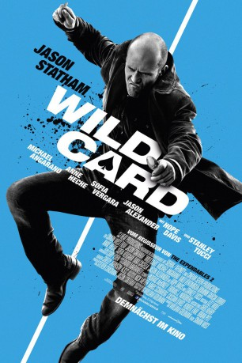

#1383 Wild Card
 gesehen am 30.06.2015
gesehen am 30.06.2015
 
 IMDB-Wertung: 5.6 / 10
IMDB-Wertung: 5.6 / 10  Metascore: 40
Metascore: 40 
Nick Wild hat es satt: Seit Jahren schlägt sich der ehemalige Söldner als Detektiv und Gelegenheitsbodyguard im Zockerparadies Las Vegas durch, obwohl er doch am liebsten sofort nach Korsika auswandern würde. Dafür fehlt allerdings das nötige Kleingeld. Als ihn eines Tages seine Ex-Flamme Holly übel zugerichtet um Hilfe anfleht, wird er schneller als ihm lieb ist in ein schmutziges Spiel mit dem einflussreichen Danny DeMarco hineingezogen. Die Männer DeMarcos im Nacken, stürzt sich Nick Wild tief in die Abgründe von Las Vegas und entfesselt eine gefährliche, alte Leidenschaft.
Jahr: 2015
Dauer: 92 Minuten
FSK: 16
Land: USA Studio: LionsgateTonspuren: DTS-HD - ,
Untertitel: Englisch, , , Französisch, , , , , , , , ,
Auflösung: 1080p (1920x792) Größe: 11059 MB
Genre: Action, Krimi, Drama, Thriller
Regisseur:  Simon West
Simon West
Drehbuch: William Goldman, William Goldman
Soundtrack: Dario Marianelli
Darsteller:
 Jason Statham als Nick Wild
Jason Statham als Nick Wild Michael Angarano als Cyrus Kinnick
Michael Angarano als Cyrus Kinnick- Dominik García-Lorido als Holly
 Hope Davis als Cassandra
Hope Davis als Cassandra Milo Ventimiglia als Danny DeMarco
Milo Ventimiglia als Danny DeMarco Max Casella als Osgood
Max Casella als Osgood Stanley Tucci als Baby
Stanley Tucci als Baby Sofía Vergara als DD
Sofía Vergara als DD Jason Alexander als Pinky
Jason Alexander als Pinky Anne Heche als Roxy
Anne Heche als Roxy Chris Browning als Tiel
Chris Browning als Tiel Matthew Willig als Kinlaw
Matthew Willig als Kinlaw Michael Papajohn als Pit Boss
Michael Papajohn als Pit Boss Jean Claude Leuyer als Julian Reeves
Jean Claude Leuyer als Julian Reeves- Greice Santo als Cocktail Waitress
- Nick Epper als Tony
 Lara Grice als First Doctor
Lara Grice als First Doctor- D'Arcy Allen als Hotshot Dealer
- Shanna Forrestall als Marie
- Isabella B. Turner als Woman
- Lee Perkins als Mean Dealer
 Kyle Clements als Orderly
Kyle Clements als Orderly- Billy Tilk als Thug #1
 Pete Antico als Thug #2
Pete Antico als Thug #2- J. Travis Merendino als Thug #3
- Clayton J. Barber als Thug #4
 Brian Blu als High Roller , uncredited
Brian Blu als High Roller , uncredited- Janet Lynn Carey als High Roller , uncredited
- Sheena Chou als Bartender , uncredited
- Diana Durango als Wendy , uncredited
 Steffie Grote als Cocktail Waitress , uncredited
Steffie Grote als Cocktail Waitress , uncredited Angela Kerecz als Sexy Santa Annie , uncredited
Angela Kerecz als Sexy Santa Annie , uncredited- Bobby Kerecz als Gambler , uncredited
- Lauren Mary Kim als Cocktail Waitress , uncredited
- Rhonda Laizer als Casino Gambler , uncredited
- Carly Richardson als Club Girl , uncredited
- Joan Riegert als Tourist , uncredited
- Corrina Roshea als Cheryl , uncredited
 Elena Sanchez als Security Guard , uncredited
Elena Sanchez als Security Guard , uncredited- François Vincentelli als Benny
- Davenia McFadden als Millicent
- Freddie Poole als Frank
- Allison Wirges als Nurse
 Michael Bower als Blackjack Guy , uncredited
Michael Bower als Blackjack Guy , uncredited- Alesia Burt als Casino Patron , uncredited
- Carroll Burt als Casino Patron , uncredited
- Maureen E. Durocher als Restaurant Patron , uncredited
- Cassandra Eastwold als Gambler , uncredited
- Joseph Fischer als Michael , uncredited
- Brandy Grace als Casino Waitress , uncredited
Datei: X:\2015(N-Z)\Wild Card (2015, FSK16, 1920x792).mkv seit 30.06.2015
Festplatte: HD 2015(A-Z)
 Es gibt insgesamt 161 Filme in der Gruppe '2015(N-Z)'
Es gibt insgesamt 161 Filme in der Gruppe '2015(N-Z)'